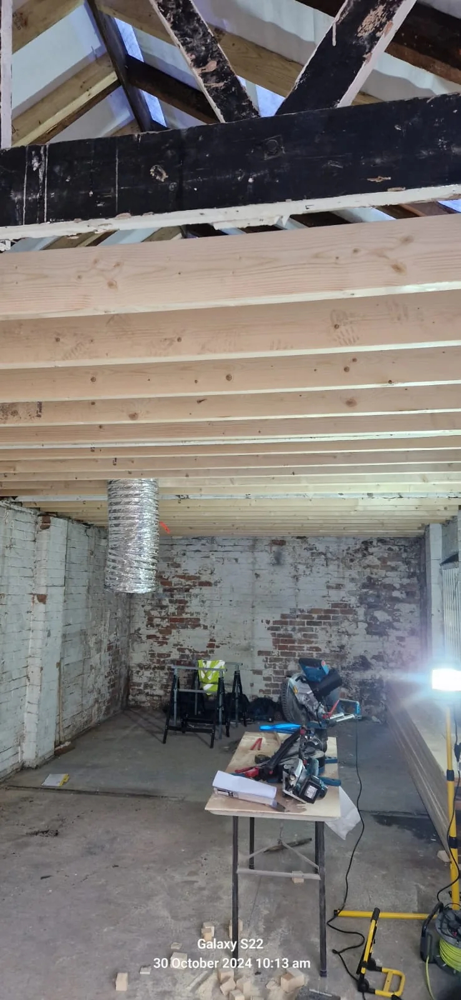
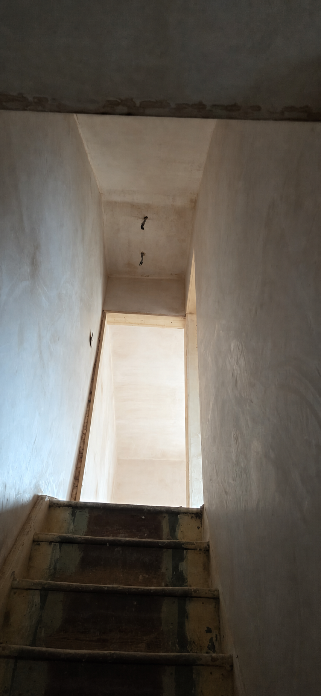
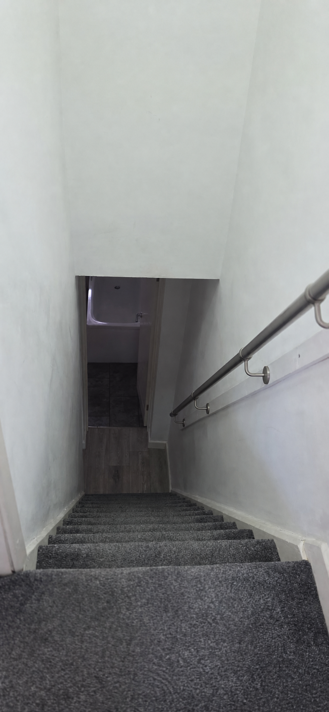
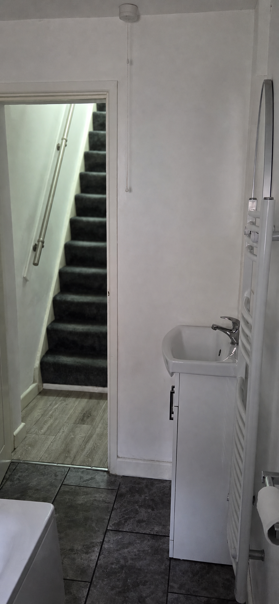

Joinery, doors & windows
Make the details work properly again.
Repairs and practical improvements for the timber elements tenants and property managers use every day.
Work in progress
Structural timber within the Kilbourn Street refurbishment
This project image records new timber members installed during the stripped-back construction stage. It is shown as genuine work-in-progress context, not as a standalone specification or certification claim.
View the Kilbourn Street case study →
Repair first, replace when sensible
Doors that catch, loose handles, worn frames and damaged trim can affect security, presentation and day-to-day use. We assess the underlying issue before recommending the practical route.
- Internal doors, linings and architraves
- External timber doors and frames
- Locks, latches, handles and hinges
- Skirting boards and timber trim
- Simple shelving and storage
- Accessible timber window components
Fire doors and safety-critical components must be assessed and worked on to the applicable specification.



Useful information for a faster response
Show the whole item
Include one wide photo plus close-ups of damage, hinges, locks or gaps.
Describe the symptom
Tell us whether it sticks, rattles, will not latch, is swollen or has visible damage.
Note safety context
Say whether it is an external, communal or identified fire door.
Got a door or timber repair?
Send clear photos with the property postcode and we’ll identify the next step.
Joinery scope for rental use
- Internal doors, frames, architraves and skirting
- Handles, latches, locks and related ironmongery
- Storage, shelving and practical timber details
- Local repair or replacement assessment around damaged material
Start with the cause
A sticking door, loose hinge or damaged frame can have more than one cause. The brief should describe the symptom and show the surrounding material before a repair route is chosen.
Questions
Frequently asked questions
Clear starting points for scoping this service.
What photographs are useful for a door or frame problem?
Send the whole door from both sides, the frame gaps, hinges, latch, keep, handles and the exact point of damage or contact.
Can a damaged item always be repaired?
Not always. The condition of the material, fixing points, available parts and cause of failure all affect whether repair or replacement is the sensible route.
How are fire or communal doors handled?
Identify them at the start. Safety-critical doors and components must be assessed and worked on to the applicable specification by a competent person; they should not be altered as ordinary joinery.
Tell us what the property needs
Share the postcode, photographs, occupancy and priorities to start a practical conversation.